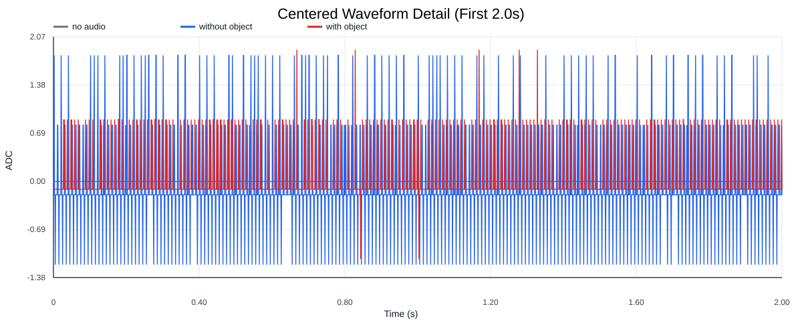
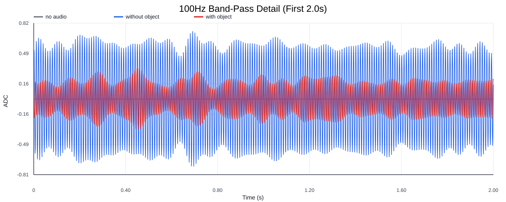
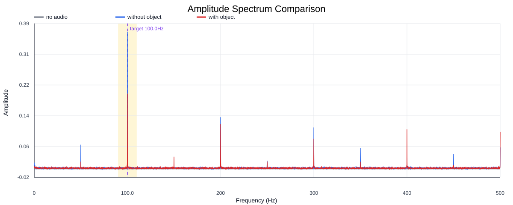
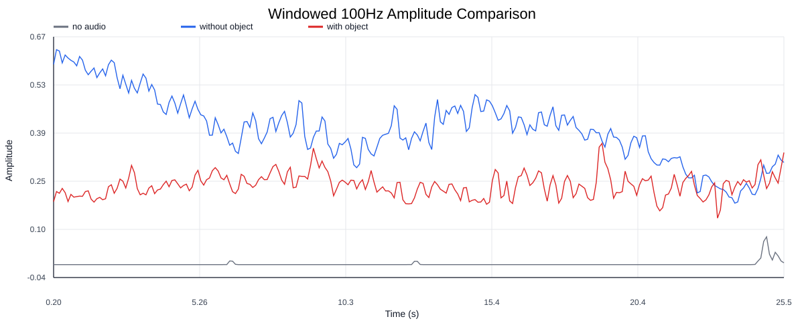
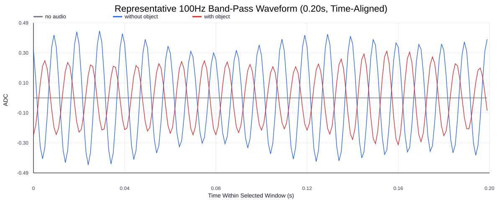
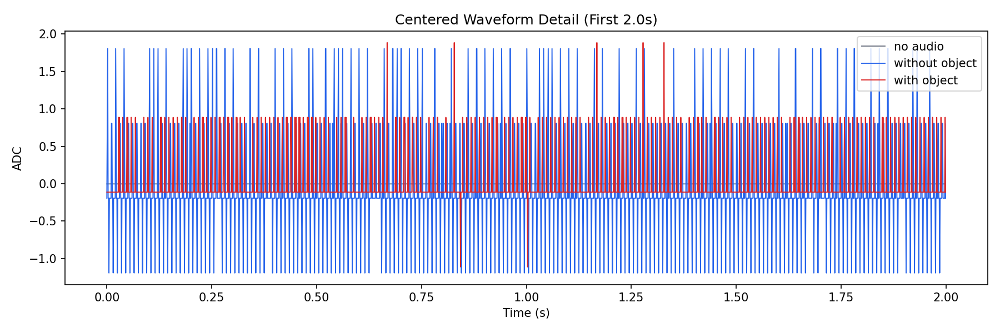
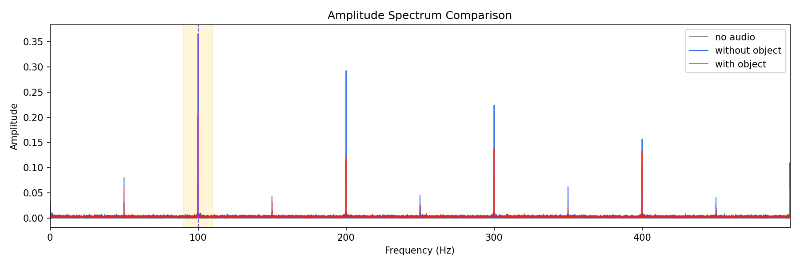
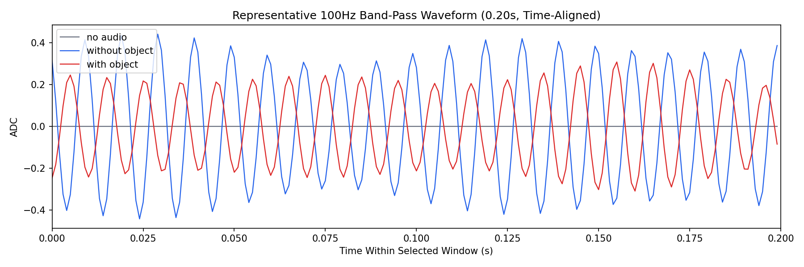

Background: F:\项目类文件夹\异物检测4.10\Data_Dual\100HZ实验组\串口数据\无音频.csv
Without object: F:\项目类文件夹\异物检测4.10\Data_Dual\100HZ实验组\串口数据\100Hz无异物.csv
With object: F:\项目类文件夹\异物检测4.10\Data_Dual\100HZ实验组\串口数据\100Hz有异物.csv
| Metric | 无音频 | 100Hz无异物 | 100Hz有异物 | 无异物/无音频 | 有异物/无异物 | 有异物/无音频 |
|---|---|---|---|---|---|---|
| centered_rms | 0.066682 | 0.494016 | 0.366862 | 7.4085 | 0.7426 | 5.5017 |
| raw_target_amp | 0.000117 | 0.365304 | 0.200542 | 3122.4315 | 0.5490 | 1714.1294 |
| filtered_rms | 0.010130 | 0.276693 | 0.173255 | 27.3149 | 0.6262 | 17.1036 |
| filtered_target_amp | 0.000117 | 0.365304 | 0.200542 | 3122.4315 | 0.5490 | 1714.1294 |
| filtered_energy_ratio | 0.023077 | 0.313699 | 0.223031 | 13.5937 | 0.7110 | 9.6647 |
| window_filtered_target_amp_mean | 0.001360 | 0.371879 | 0.236477 | 273.4136 | 0.6359 | 173.8630 |
| window_filtered_target_amp_std | 0.007685 | 0.104422 | 0.035720 | 13.5876 | 0.3421 | 4.6480 |







